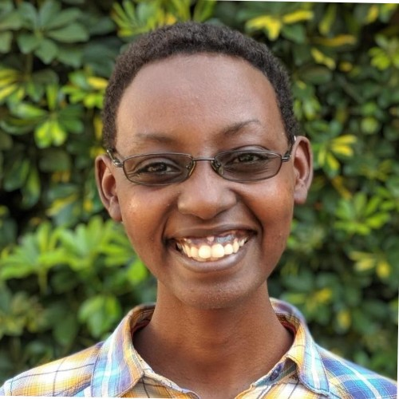

Capabilities
Technologies our engineers are experienced in:
Javascript frameworks, technologies, and flavors
- Typescript
- Node
- Express.js
- Vue
- React
- Next.js
- Nuxt
- Webpack
- Parcel
- ESbuild
- Angular
- jquery
- Mocha
- Chai
- Jasmine
- Jest
Web frameworks, fullstack frameworks, web tooling, servers, and non-js web technologies
- Django
- FastAPI
- Flask
- Hugo
- Wordpress
- HTTPS
Databases, database ORMs, and database services
- Postgresql
- Mysql
- SQLAlchemy
- Mongo
- GraphQL
- Google Cloud BigQuery
- Airtable
- NoSQL
- SQL
Deployment, containerization, automation, reverse proxy, and hosting services and technologies
- Docker
- Heroku
- Cloudflare Pages
- Ubuntu Server
- Nginx
- Certbot
- Gitlab
- Github
- Bluehost
Project management
- Agile
- Linear
- Jira
- Leantime
- Figma
- Notion
- Kanban
Solutions
508.dev is a full-service software engineering firm. We can help clients in any phase of a software project, from ideation, to scoping, speccing, designing, architecting, implementing, deploying, testing, and maintenance, whether a new project or existing one.
Our focus is on not needing our clients to hold our hand, which is why we put so much effort into upskilling our own engineers. At 508, everyone takes personal responsibility in a project's outcomes, which for our clients means you can just plug us in, sit back, and let us drive your success.
We can help:
- Design and develop full stack SaaS products from scratch
- Implement front or back-ends to an existing project
- Increase throughput of existing IC teams
- Project manage software projects, across any number of timezones
- Estimate, spec, and ticket software projects
- Upgrade and maintain legacy projects
Services
Curious if 508.dev fits your business needs? Take a look at our specific solutions, and the 508.dev members who've delivered these same solutions to other businesses in the past.
Frontend Web Development, SaaS Product Dev, Website Design + Development
Whether you need to build a simple frontend for your CMS, a shopify site, or a fully-fledged frontend SaaS product, 508.dev can provide you with the people, team, and guidance to accomplish your vision.
Members:
-

Daniel Tong
Adobe-certified Adobe Experience Manager(AEM) Architect with over 10 years experience split between consulting and embedded work, currently working in fullstack Javascript/Node development.
-

Zachary Fogg
Specializing in frontend web, devops/infrastructure, and blockchain applications, Zach has built applications for many different types of startups and companies over the past decade. He also has experience building games and bots. He is comfortable in Javascript, Typescript, Python, C, and Solidity.
-

Morgan Elliot
Software engineer with extensive frontend experience on React and Next.js projects for Ycombinator startups such as Cofactr and for the United Nations.
-

Michael Wu
Software engineer and founder with over 12 years of experience at Pixelapse (YC W12), Dropbox, Gem, and Stripe. Backend and desktop development experience, proficiency with Python, Ruby, Javascript, Java, Scala, C and more.
-
Sam Simonds
Software engineer with a strong foundation in applications leveraging TypeScript / Next.js, JavaScript, HTML and CSS. He's built web applications for start ups, healthcare organizations, and non-profits around the world.
-
Kal Zheng
A full-stack engineer with extensive knowledge in web development, specializing in PHP frameworks such as Laravel and CodeIgniter. He has built applications in industries such as Telecom, Fintech, Hardware, and Material Science for both startups and enterprise organizations.
-
YuChi Chien
Yu Chi is a Frontend Engineer with several years of experience building for cloud platform companies (PaaS) as well as web accessibility NGOs. They are proficient in Javascript, React, Nextjs, and Tailwind.
Backend Web Development, Fullstack Engineering, Database Management, Devops
508.dev backend, fullstack, and devops engineers come with years of experience in many industries. Each has proven to be uniquely qualified engineers throughout their careers, and often have experience in leadership as well as IC work.
Members:
-

Dennis Ordanov
Dennis is a Senior Site Reliability Engineer and Senior Software Engineer that has built for the AI, Fintech, and Infosec industries, with experience at companies such as Uber, Salesforce, Linkedin, and Google. He has nearly 20 years of IT and engineering experience and is comfortable in Java, Go, Python, AWS (EKS, etc), DevOps, Elasticsearch, MongoDB, Docker, Kubernetes, Terraform, and Infosec.
-
Ian Lin
Ian is a software engineer with a master's in computer science and three years of expertise in Java and C#. He has developed software solutions across web, mobile, and database systems.
-
David Chien
David is an experience software engineer with experience across the entire web stack, including frontend, backend, and database engineering. He's worked in media, fintech, and e-commerce. He's comfortable with C#, ASP.NET, Ruby, Rails, Javascript, MySQL, and Docker.
-
Daniel Tong
Daniel is an Adobe-certified Adobe Experience Manager(AEM) Architect with over 10 years experience split between consulting and embedded work, currently working in fullstack Javascript/Node development.
-
Michael Wu
Software engineer and founder with over 12 years of experience at Pixelapse (YC W12), Dropbox, Gem, and Stripe. Backend and desktop development experience, proficiency with Python, Ruby, Javascript, Java, Scala, C and more.
-
Yen Lin (Josh) Huang
Josh is a backend engineer specializing in PHP for more than 5 years, working on legacy integration projects as well as feature development for more modern frameworks. He is familiar with PHP, Python, Laravel, MySQL, AWS (Lambda, EC2), Docker, and Jenkins.
-

Simone Massenzio
Simone is a Backend Engineer with experience in the Transportation, Agricultural Sciences, and IT Services industries. He's built transportation systems, application servers, and data analysis applications. He's experienced in Java, Spring-Boot, multiple ORMs, MongoDB, and Apache Kafka.
-
Chia-Hung Lin
Chia-Hung has over a decade of experience contributing to FOSS projects, including key contributions to Apache Hama. He has experience in Scala, Python, AWS, and infrastructure.
-
Kal Zheng
A full-stack engineer with extensive knowledge in web development, specializing in PHP frameworks such as Laravel and CodeIgniter. He has built applications in industries such as Telecom, Fintech, Hardware, and Material Science for both startups and enterprise organizations.
-
Chi Wei Lin (Linion)
Linion has over 5 years of experience in web development, with a focus on backend engineering. He's worked in e-commerce and on ERP systems, leading an ERP build from scratch. He's comfortable with .NET, Python, RabbitMQ, Azure services, Javascript, Angular, SQL, NodeJS, and MongoDB.
-

Leni Kadali
Leni is a software engineer with 4 years of experience working in software development, primarily in web development. Their background includes work across the Python (Django, Flask) and Ruby (Rails) ecosystems, in industries such as Telecom, Green Energy, and manufacturing.
Android App Development, Apple iOS Development
508.dev has many engineers that have built for mobile platforms, and unlike many consultancies offering mobile app development, 508.dev focuses on ensuring members deliver quality engineering without the need for hundreds of rewrites. We build software that works, the first time, for a long time.
Members:
-

Alex Wang
Alex is a Senior Software Engineer with over a decade of engineering experience in various stacks. Most recently, he's been building iOS applications in Objective-C and Swift in the media and advertisement industries. He also has extensive web development experience. He is comfortable in Swift, Objective-C, PHP, Javascript, SQL, Laravel, C#, and VBA.
-
Albert Chang
Albert is a senior software engineer and technical manager that has more than 20 years of experience developing software. He has unique experience developing native applications for linux and IoT platforms, owing to his time at companies such as MediaTek. He is comfortable in C, C++, Python, and Android and Linux application development.
-

Charles Hsieh
Charles is an iOS specialized software engineer with several years of experience building Apple iOS mobile apps for companies such as FoodPanda and Crypto.com. He particularly specializes in optimization.
AI, GPT, Machine Learning, Data Science, Quantum Computing
508.dev engineers were working with AI before it was cool.
Members:
-

Dr. Kuan-Ru Chiou
Dr. Chiou has been academically involved in AI and Quantum Computing for over 15 years. He holds degrees in Computation Physics, Physics, and a doctorate from National Taiwan University in Physics Engineering. He also several years of industry experience, working as a Machine Learning Data Scientist, Deep Learning and Machine Learning Engineer, and AI trading quantitative researcher and developer. He has experience in NLP, CV, and generative AI models, quantum computing, business intelligence analysis, as well as AWS, C++, Computer Vision, Matlab, Numpy, Pandas, Python, and Pytorch.
IoT, Hardware, Etc. Weird Linux Stuff
508.dev's close ties to Taiwan gives us access to quite literally the world's best hardware and platform engineers, people on whose backs the semiconductor empires of TSMC, MediaTek, and Nvidia are built. If you need the kind of IoT and hardware engineering that only the most knowledgeable on earth can provide, 508.dev can help connect you with those people. Some are already members!
Members:
-
Albert Chang
Albert is a senior software engineer and technical manager that has more than 20 years of experience developing software. He has unique experience developing native applications for linux and IoT platforms, owing to his time at companies such as MediaTek. He is comfortable in C, C++, Python, and Android and Linux application development.
-
Dennis Ordanov
Dennis is a Senior Site Reliability Engineer and Senior Software Engineer that has built for the AI, Fintech, and Infosec industries, with experience at companies such as Uber, Salesforce, Linkedin, and Google. He has nearly 20 years of IT and engineering experience and is comfortable in Java, Go, Python, AWS (EKS, etc), DevOps, Elasticsearch, MongoDB, Docker, Kubernetes, Terraform, and Infosec.
-
Chia-Hung Lin
Chia-Hung has over a decade of experience contributing to FOSS projects, including key contributions to Apache Hama. He has experience in Scala, Python, AWS, and infrastructure.
Localization
508.dev's globally distributed nature means we are uniquely positioned to assist with localization, particularly to Taiwan and China, but as well as Latin America, portions of Africa, Italy, and Eastern Europe. All of our members that can work in localization are at minimum expertly proficient in English, as a prerequisite to co-op membership. No more miscommunication with localization staff!
Since nearly every member of 508.dev is bi- or tri-lingual (or more!), we would essentially need to just re-list everyone here. Instead, take a look at our entire team!
Recent Projects
Cofactr
Full SaaS project built from scratch for Ycombinator startup. Worked with CEO to develop and implement designs, otherwise, took total ownership over frontend architecture, project management, estimation, and leading non-508 frontend engineers to build out platform, while programming majority of the IC work. Project delivered in under nine months.

Jovono
Platform upgrade for Jovono's portfolio site. Upgraded drastically out of date libraries and Next.js version, converted site from unnecessary server-side rendered paradigm to more optimized server-side generated paradigm, migrated deployment and hosting from Heroku to Cloudflare Pages, transferred CRM off of Airtable, improved accessibility.

Share Your Path
Frontend overhaul of Share Your Path's job search and networking application built on Next.js. Enhanced UI/UX design, user flows, seed data, revised data schema, end-to-end testing, and addressed server-side bugs to build a launch-ready scalable application. Keystone, Apollo, Typescript/React, Tailwind and Material-UI libraries, Playwright.